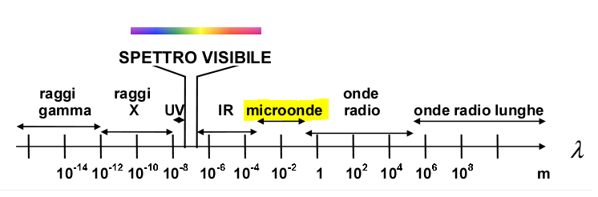
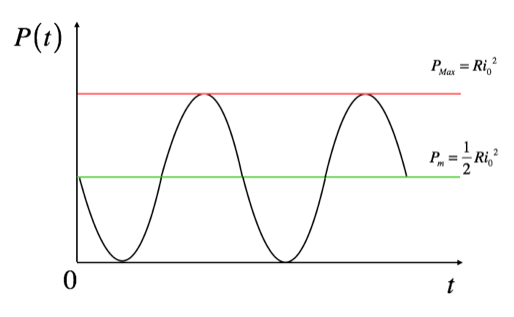
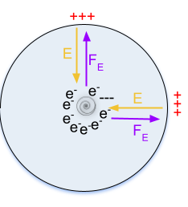
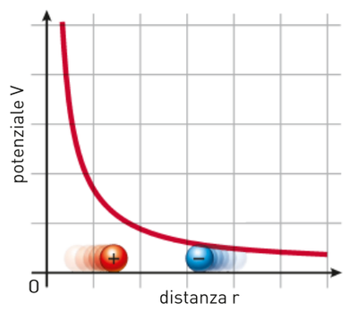

Elaborato di Matematica e Fisica:
Di forni a microonde, elettromagnetismo e crisi
A.S. 2020/2021
Massimiliano Luppi
Si allega il digest md5 del codice inserito all’interno dell’IDE P5JS al fine di controprovarne alterazioni postume alla consegna dell’elaborato. Il digest è realizzato con questo tool online.
Animazione n. 1: 0fb2c9c97967c3d09ba0a8feab4302b5
Animazione n. 2: 2657875efc537e8ef4a828deac7ee3bc
Uno spettro si aggira per l’Europa – lo spettro dell’elettromagnetismo. Tutte le scienze della vecchia Europa, la fisica e la chimica, Galileo e Newton, deterministi e causalisti, meccanicisti e Laplaciani, Michelson e Morley, si sono uniti in crociata e danno la caccia a questo spettro 1
Quello presentato, in realtà, è un fantasma fittizio: la crociata sopra descritta non è che figurativa, molti dei “cacciatori” citati, già scomparsi o non ancora nati all’epoca, sarebbero stati più che contenti di essere smentiti. Le scoperte che riguardano la natura delle sostanze ferromagnetiche da parte di Faraday ed Oersted sono infatti ben accolte dalla comunità scientifica. Queste entrano però presto in contrapposizione dialettica, in antitesi, con la fisica dei secoli prima: le equazioni di Maxwell, che descrivono il comportamento della luce, scopertasi onda elettromagnetica, sono incompatibili con la dinamica e la meccanica classica. Vi sono delle incongruenze fra i due modelli che vanno a sommarsi alle domande lasciate senza risposta dalla concezione della forza di gravità di Newton come attrazione invisibile e indecifrabile. Dalle trasformazioni di Galileo, che non contemplano l’invarianza della luce, alla definizioni di energia totale, cinetica e della quantità di moto, qualcosa non quadra.
In questo scenario, si potrebbe dire provocatoriamente che, in modo analogo al proletariato, l’elettromagnetismo ricopra una carica eversiva e rivoluzionaria all’interno dello studio della fisica. Solleva quesiti nuovi, mettendo in luce le criticità necessarie di una conoscenza induttiva e modellistica del mondo naturale, anche se, come spesso accade, finisce per lasciare più interrogativi aperti che chiusi. Questo è però il bello della scienza, dopotutto.
Le resistenze incontrate e confutate, a partire dalla concezione dell’etere luminifero e dunque dall’esperimento di Michelson e Morley attraverso l’interferometro, hanno fatto sì che lo studio della fisica, un processo appunto dialettico, giungesse alla relatività ristretta, sintesi della dinamica classica entrata in attrito con il principio di invarianza della luce, poi alla relatività generale, soluzione al conflitto tra relatività ristretta e meccanica classica ed infine, più tardi, alla concezione, sempre per sintesi Hegeliana, della meccanica quantistica che dava finalmente spiegazione alla doppia natura del comportamento della luce.
Lo studio delle onde elettromagnetiche e dunque della luce ci ha permesso di sostituire al mondo freddo, piatto e meccanico concepito da Newton e Laplace ‒ fatto di minuscoli sassolini freddi che vagavano eterni lungo traiettorie precise di uno spazio geometrico ‒ un mondo più elegante, formato da moti più semplici, rettilinei ed uniformi, ma che all’interno dello spazio tempo, incurvato da masse, non più assolute, si configurano nei moti ellittici, accelerati, e combinati a cui assistiamo per mezzo dei nostri telescopi.
Si potrebbe azzardare, almeno per quanto riguarda lo studio della fisica, che l’elettromagnetismo metta finalmente in crisi la concezione provvidenzialistica del mondo, governato da principi e leggi immutabili, approdando ad un mondo nuovo, sconosciuto e indeterminato, che non contempli motori immobili e arcani rapporti causali a noi oscuri.
Le equazioni di Maxwell cambiano radicalmente il volto della fisica, non vi sono più particelle che si influenzano attraverso misteriose interazioni a distanza, ma particelle che interagiscono per mezzo di campi, del campo elettromagnetico. La rivoluzionarietà del concetto di campo non si limita alla fisica teorica. Le applicazioni reali di questi leggi, infatti, sono vastissime.
Ad esempio, banalmente, grazie ad esse oggi siamo in grado di riscaldare e volendo cucinare del cibo attraverso l’uso di un forno a microonde, dispositivo che ci apprestiamo ad analizzare. In un certo senso, Maxwell e Faraday sono i Prometeo dei tempi moderni.
Un forno a microonde è un dispositivo che sfrutta onde elettromagnetiche a frequenza relativamente bassa per riscaldare e cuocere degli alimenti. Si tratta di onde che hanno una lunghezza d’onda
maggiore rispetto allo spettro delle onde elettromagnetiche visibili. La lunghezza d’onda è compresa tra quelle delle onde radio e delle radiazioni infrarosse, ed è in genere tra 1 me 1 mm.
Ricordiamo che
 [fig: cubed graph]
Un forno a microonde si compone delle seguenti parti:
Un trasformatore: che innalzi il valore della tensione della corrente.
Un raddrizzatore che assicuri un flusso di corrente elettrica continua e non alternata al magnetron.
Un magnetron, all’interno del quale vengono generate le onde elettromagnetiche.
Un circuito di controllo per il magnetron funzionale alla gestione elettrica del magnetron e dunque alla modulazione delle microonde. La modulazione avviene per mezzo di un microprocessore.
Un vacuum tube, un tubo d’aspirazione che mantiene il vuoto all’interno del magnetron.
Una ventola che tenga freddo il magnetron.
Una guida d’onda che indirizza le onde elettromagnetiche dal magnetron alla camera di cottura.
Una camera o cavità di cottura contente in genere un piatto rotante.
Una rete in metallo applicata allo sportello che blocchi le radiazioni che tentano di sfuggire alla cavità di cottura.
[fig: cubed graph]
Affinché il magnetron riesca a generare delle onde elettromagnetiche, c’è bisogno che questo sia alimentato da una tensione in corrente continua di diverse migliaia di Volt. A tal proposito, per innalzare il valore della tensione della corrente proveniente dalla rete elettrica () si utilizza il dispositivo del trasformatore che sfrutta il fenomeno dell’induzione elettromagnetica per innalzare ed abbassare la tensione o la corrente a seconda delle sue caratteristiche costruttive. Il forno microonde utilizza un trasformatore di tensione.
Un trasformatore è composto da due bobine, due solenoidi, di resistenza trascurabile avvolti attorno ad un nucleo di ferro. Possiamo distinguere due circuiti: uno primario ed uno secondario. Nel circuito primario, la corrente alternata in entrata proveniente dalla rete elettrica genera un campo magnetico variabile. Come sappiamo infatti dall’esperienza di Oerstead, un filo percorso da corrente genera un campo magnetico. Precisamente, nel caso del solenoide si tratta di un campo magnetico dal modulo . Il campo magnetico variabile viene aumentato di intensità ed indirizzato dal nucleo di ferro che lega i due solenoidi. Il ferro, sostanza paramagnetica dal forte momento magnetico, agisce in modo tale che le perdite di potenza non siano troppo significative:
All’interno del circuito secondario, la variazione di flusso del campo magnetico, in accordo con la legge di Faraday-Neumann genera una corrente indotta, poiché il modulo del campo magnetico che investe la superficie del solenoide del circuito secondario varia poiché generato da una corrente alternata. Dalla seconda legge di Maxwell e dalla prima legge di Ohm:
Valgono dunque:
e
Se non si dissipa potenza allora
Affinchè la tensione sia innalzata, il rapporto di trasformazione dovrà essere
e dunque il numero di spire
Una volta trasformata la tensione, un piccolo dispositivo, il raddrizzatore, si occupa di trasformare la corrente alternata in nel suo valore efficace, il corrispondente continuo.
Dato che in un circuito Ohmico di Resistenza R attraversato da corrente alternata la potenza dissipata per effetto Joule corrisponde a avremo allora l’erogazione di una potenza media pari a
 [fig: cubed graph]
La potenza è prodotta allo stesso modo da una corrente continua di Intensità efficace
. Il raddrizzatore si occupa appunto del raddrizzamento del segnale alternato in uno mono-direzionale, senza perdite significative di potenza
. Per la legge di Ohm avremo dunque:
La corrente continua arriva infine al magnetron, un dispositivo cilindrico, fondamentale per il funzionamento di un forno a microonde, che si occupa della generazione delle onde elettromagnetiche che riscalderanno gli alimenti.
Il raddrizzamento si rivela un passaggio fondamentale per il funzionamento del magnetron: la corrente continua percorre un solenoide che funge da antenna. Questo, per effetto Joule, si riscalda. Con l’aumento della temperatura abbiamo un aumento dell’energia cinetica media degli elettroni, liberi all’interno del metallo. Tra l’esterno e l’interno vi è una differenza di potenziale che viene colmata dall’energia termica e dunque cinetica degli elettroni.
con
carica elementare
Una volta superata la soglia del lavoro di estrazione, l’elettrone viene liberato dal metallo. Il metallo rimane ionizzato poiché privo di elettroni: L’elettrone sfugge all’antenna per effetto termoionico.
Gli elettroni liberati dall’antenna entrano nella cavità del magnetron, si formano un anodo ed un catodo per la differenza di potenziale: vi sono molti elettroni attorno all’antenna. Si crea dunque un campo elettrico dal catodo (esterno, positivo) all’anodo (interno, negativo).
 [fig: cubed graph]
Ecco che allora il magnetron si comporta come un condensatore: sebbene non sia piano, possiamo trovare una armatura positiva, la superficie esterna del magnetron, ed una negativa, l’antenna. Esse sono isolate dallo spazio vuoto creato dal tubo di aspirazione. Troviamo un campo elettrico uscente rispetto alla piastra positiva, poiché le linee di campo elettrico sono in generale entranti rispetto a cariche negative. Le cariche, immerse in un campo magnetico, subiscono una forza pari a:
con
carica elementare
Gli elettroni, secondo il loro moto spontaneo, salgono la curva del potenziale, passando da un punto a potenziale maggiore, vicini all’antenna, a punti a potenziale minore cioè verso l’armatura positiva. Se chiamiamo A il punto dell’antenna e B un punto dell’armatura positiva possiamo dimostrare come il moto sia spontaneo:
Se moto spontaneo
poiché
e
 [fig: cubed graph]
Abbiamo visto che il magnetron si comporta come un condensatore, genera un campo elettrico fra anodo e catodo che accelera il moto delle cariche. Questo contribuisce a generare onde elettromagnetiche poiché, come vedremo, l’accelerazione degli elettroni genera una variazione di flusso del campo elettrico all’interno della cavità di induzione. Tuttavia, le cariche, sottoposte solo alla forza di Coulomb, rimangono troppo poco tempo nella cavità del magnetron, fra i due elettrodi, per produrre un’oscillazione e dunque un’onda che sia funzionale alla cottura.
Affinché la variazione di flusso del campo elettrico sia maggiore, si inserisce il magnetron fra due facce con polarità opposta di due magneti, posti sopra e sotto il magnetron. Creiamo così un magnete permanente, le linee di campo magnetico uscenti dalla faccia negativa del magnete inferiore entrano nella faccia positiva del magnete superiore. Il magnetron è quindi percorso da un campo magnetico uniforme.
Gli elettroni, che viaggiano all’interno del campo magnetico, subiscono, oltre alla forza elettrica dovuta alla differenza di potenziale, la forza di Lorentz. Questa forza, , ha lavoro pari a zero poiché l’angolo
_() =
_ () = - = f_em
_S() = - _ () t = f_emt
_(B) = 0
_(B) = B 2r h (90°)
_() = _0 [i_tot+ _0 ]
{
@l@ c = ,
E = cB ,
f = c
. . ![\end{center}
\begin{figure}[h]
\centering
\includegraphics[scale=0.28]{12.png}
\label{fig: cubed graph}
\end{figure}
\newpage
\section{La cottura ed il riscaldamento a microonde }
\subsection{Lo spin delle molecole d'acqua}
Una volta generate, le onde elettromagnetiche vengono condotte nella cavità di cottura per mezzo della guida d'onda, un tubo dalla sezione rettangolare.
Le onde elettromagnetiche cominciano qui la cottura o il riscaldamento degli alimenti attraverso la rotazione, lo spinning, di molecole polari. Queste, sottoposte ad un campo elettrico variabile, cambiano continuamente orientamento poiché i dipoli magnetici della molecola sono attratti dal potenziale elettrico opposto.\\
Nel caso specifico dei forni a microonde commercialmente usati, la molecola target delle oscillazioni delle microonde con una specifica lunghezza d'onda generata dal magnetron è l'acqua.
L'acqua, inserita nel campo elettrico, acquisisce velocità aumentando la propria temperatura.\\
In accordo con il secondo principio della termodinamica – secondo il quale non è possibile costruire una macchina il cui unico scopo sia quello di trasportare calore da un corpo più caldo ad uno più freddo – ma più in generale le leggi probabilistiche di Boltzmann – secondo le quali è semplicemente più probabile che una molecola a temperatura (e dunque velocità) elevata compia un urto efficace con un'altra molecola cedendole calore– l'acqua cede energia alle altre molecole sotto forma di calore riscaldando tutto il contenuto del microonde.
\vspace*{-0.15in}
\begin{figure}[h]
\centering
\includegraphics[scale=0.25]{13.png}
\includegraphics[scale=0.21]{19.png}
\label{fig: cubed graph}
\end{figure}
\vspace*{-0.3in}
\paragraph{Differenze con i forni a conduzione} La differenza dunque con i forni a convezione, che prima riscaldano l'aria, poi la superficie degli alimenti e solo poi il loro interno, è il numero totale di urti efficaci richiesti. I forni a microonde si rivelano infatti estremamente rapidi rispetto ai loro simili a convezione anche per la loro capacità di cuocere dall'interno, accelerando le molecole d'acqua per mezzo delle onde elettromagnetiche.
\begin{figure}[h]
\centering
\frame{\includegraphics[scale=0.63]{14.png}}
\label{fig: cubed graph}
\end{figure}
\vspace*{-0.3in}
\subsection{Il piatto rotante}
\paragraph{Le microonde: onde stazionarie} Le onde elettromagnetiche nella camera di cottura ricordano delle onde stazionarie, aventi dei nodi fissi, poiché il flusso dei campi elettrico e magnetico, e quindi il loro profilo spaziale, è influenzato dalla sezione regolare della guida d'onda da cui escono e dalla dimensione fissa della cavità che percorrono.\\
Poiché la lunghezza d'onda delle microonde e le dimensioni lineari della camera di cottura sono all'incirca le stesse, l'irraggiamento non è identico in tutti i punti del microonde: esso sarà inferiore soprattutto nei punti di nodo, motivo per cui si inserisce un piatto rotante che promuova una cottura uniforme del cibo. È consigliabile quindi lasciare gli alimenti sul bordo del piatto del microonde piuttosto che in mezzo.
\begin{figure}[h]
\centering
\frame{
\includegraphics[scale=0.280]{15.png}}
\label{fig: cubed graph}
\end{figure}
\section{Il comportamento delle onde elettromagnetiche e la quantizzazione}
Le onde elettromagnetiche non sfuggono alla cavità di cottura poiché è realizzata come una gabbia di Faraday. La rete ferromagnetica sullo sportello assorbe tutte le onde elettromagnetiche camera.
\subsection{Cosa succede dal punto di vista Energetico all'interno della camera di cottura?
}
\paragraph{Dubbi sull'elettromagnetismo classico}
Sebbene il modello ondulatorio delle onde elettromagnetiche spieghi come accada il riscaldamento attraverso le microonde, non è chiaro come il primo principio della termodinamica, un'estensione del principio di conservazione dell'energia, sia rispettato.
Le onde elettromagnetiche diminuiscono di intensità dopo aver interagito con le molecole d'acqua? Se si in che misura? Come variano le componenti del campo magnetico e del campo elettrico? Rimane valida l'equazione](https://latex.codecogs.com/png.latex?%5Ctextstyle%20%5Cend%7Bcenter%7D%0A%0A%20%5Cbegin%7Bfigure%7D%5Bh%5D%0A%5Ccentering%0A%5Cincludegraphics%5Bscale%3D0.28%5D%7B12.png%7D%0A%5Clabel%7Bfig%3A%20cubed%20graph%7D%0A%5Cend%7Bfigure%7D%0A%0A%5Cnewpage%0A%5Csection%7BLa%20cottura%20ed%20il%20riscaldamento%20a%20microonde%20%7D%0A%5Csubsection%7BLo%20spin%20delle%20molecole%20d%27acqua%7D%20%0AUna%20volta%20generate%2C%20le%20onde%20elettromagnetiche%20vengono%20condotte%20nella%20cavit%C3%A0%20di%20cottura%20per%20mezzo%20della%20guida%20d%27onda%2C%20un%20tubo%20dalla%20sezione%20rettangolare.%20%0ALe%20onde%20elettromagnetiche%20cominciano%20qui%20la%20cottura%20o%20il%20riscaldamento%20degli%20alimenti%20attraverso%20la%20rotazione%2C%20lo%20spinning%2C%20di%20molecole%20polari.%20Queste%2C%20sottoposte%20ad%20un%20campo%20elettrico%20variabile%2C%20cambiano%20continuamente%20orientamento%20poich%C3%A9%20i%20dipoli%20magnetici%20della%20molecola%20sono%20attratti%20dal%20potenziale%20elettrico%20opposto.%5C%5C%20%0A%0ANel%20caso%20specifico%20dei%20forni%20a%20microonde%20commercialmente%20usati%2C%20la%20molecola%20target%20delle%20oscillazioni%20delle%20microonde%20con%20una%20specifica%20lunghezza%20d%27onda%20generata%20dal%20magnetron%20%C3%A8%20l%27acqua.%20%0AL%27acqua%2C%20inserita%20nel%20campo%20elettrico%2C%20acquisisce%20velocit%C3%A0%20aumentando%20la%20propria%20temperatura.%5C%5C%0A%0AIn%20accordo%20con%20il%20secondo%20principio%20della%20termodinamica%20%E2%80%93%20secondo%20il%20quale%20non%20%C3%A8%20possibile%20costruire%20una%20macchina%20il%20cui%20unico%20scopo%20sia%20quello%20di%20trasportare%20calore%20da%20un%20corpo%20pi%C3%B9%20caldo%20ad%20uno%20pi%C3%B9%20freddo%20%E2%80%93%20ma%20pi%C3%B9%20in%20generale%20le%20leggi%20probabilistiche%20di%20Boltzmann%20%E2%80%93%20secondo%20le%20quali%20%C3%A8%20semplicemente%20pi%C3%B9%20probabile%20che%20una%20molecola%20a%20temperatura%20%28e%20dunque%20velocit%C3%A0%29%20elevata%20compia%20un%20urto%20efficace%20con%20un%27altra%20molecola%20cedendole%20calore%E2%80%93%20l%27acqua%20cede%20energia%20alle%20altre%20molecole%20sotto%20forma%20di%20calore%20riscaldando%20tutto%20il%20contenuto%20del%20microonde.%0A%5Cvspace%2A%7B-0.15in%7D%0A%20%5Cbegin%7Bfigure%7D%5Bh%5D%0A%5Ccentering%0A%5Cincludegraphics%5Bscale%3D0.25%5D%7B13.png%7D%0A%5Cincludegraphics%5Bscale%3D0.21%5D%7B19.png%7D%0A%0A%5Clabel%7Bfig%3A%20cubed%20graph%7D%0A%5Cend%7Bfigure%7D%0A%5Cvspace%2A%7B-0.3in%7D%0A%5Cparagraph%7BDifferenze%20con%20i%20forni%20a%20conduzione%7D%20La%20differenza%20dunque%20con%20i%20forni%20a%20convezione%2C%20che%20prima%20riscaldano%20l%27aria%2C%20poi%20la%20superficie%20degli%20alimenti%20e%20solo%20poi%20il%20loro%20interno%2C%20%C3%A8%20il%20numero%20totale%20di%20urti%20efficaci%20richiesti.%20I%20forni%20a%20microonde%20si%20rivelano%20infatti%20estremamente%20rapidi%20rispetto%20ai%20loro%20simili%20a%20convezione%20anche%20per%20la%20loro%20capacit%C3%A0%20di%20cuocere%20dall%27interno%2C%20accelerando%20le%20molecole%20d%27acqua%20per%20mezzo%20delle%20onde%20elettromagnetiche.%20%0A%0A%5Cbegin%7Bfigure%7D%5Bh%5D%0A%5Ccentering%0A%5Cframe%7B%5Cincludegraphics%5Bscale%3D0.63%5D%7B14.png%7D%7D%0A%5Clabel%7Bfig%3A%20cubed%20graph%7D%0A%5Cend%7Bfigure%7D%0A%5Cvspace%2A%7B-0.3in%7D%0A%5Csubsection%7BIl%20piatto%20rotante%7D%0A%5Cparagraph%7BLe%20microonde%3A%20onde%20stazionarie%7D%20Le%20onde%20elettromagnetiche%20nella%20camera%20di%20cottura%20ricordano%20delle%20onde%20stazionarie%2C%20aventi%20dei%20nodi%20fissi%2C%20poich%C3%A9%20il%20flusso%20dei%20campi%20elettrico%20e%20magnetico%2C%20e%20quindi%20il%20loro%20profilo%20spaziale%2C%20%C3%A8%20influenzato%20dalla%20sezione%20regolare%20della%20guida%20d%27onda%20da%20cui%20escono%20e%20dalla%20dimensione%20fissa%20della%20cavit%C3%A0%20che%20percorrono.%5C%5C%0APoich%C3%A9%20la%20lunghezza%20d%27onda%20delle%20microonde%20e%20le%20dimensioni%20lineari%20della%20camera%20di%20cottura%20sono%20all%27incirca%20le%20stesse%2C%20l%27irraggiamento%20non%20%C3%A8%20identico%20in%20tutti%20i%20punti%20del%20microonde%3A%20esso%20sar%C3%A0%20inferiore%20soprattutto%20nei%20punti%20di%20nodo%2C%20motivo%20per%20cui%20si%20inserisce%20un%20piatto%20rotante%20che%20promuova%20una%20cottura%20uniforme%20del%20cibo.%20%C3%88%20consigliabile%20quindi%20lasciare%20gli%20alimenti%20sul%20bordo%20del%20piatto%20del%20microonde%20piuttosto%20che%20in%20mezzo.%20%20%20%20%20%0A%20%5Cbegin%7Bfigure%7D%5Bh%5D%0A%5Ccentering%0A%5Cframe%7B%0A%5Cincludegraphics%5Bscale%3D0.280%5D%7B15.png%7D%7D%0A%5Clabel%7Bfig%3A%20cubed%20graph%7D%0A%5Cend%7Bfigure%7D%0A%0A%0A%0A%5Csection%7BIl%20comportamento%20delle%20onde%20elettromagnetiche%20e%20la%20quantizzazione%7D%0ALe%20onde%20elettromagnetiche%20non%20sfuggono%20alla%20cavit%C3%A0%20di%20cottura%20poich%C3%A9%20%C3%A8%20realizzata%20come%20una%20gabbia%20di%20Faraday.%20La%20rete%20ferromagnetica%20sullo%20sportello%20assorbe%20tutte%20le%20onde%20elettromagnetiche%20camera.%0A%5Csubsection%7BCosa%20succede%20dal%20punto%20di%20vista%20Energetico%20all%27interno%20della%20camera%20di%20cottura%3F%20%0A%7D%0A%5Cparagraph%7BDubbi%20sull%27elettromagnetismo%20classico%7D%0ASebbene%20il%20modello%20ondulatorio%20delle%20onde%20elettromagnetiche%20spieghi%20come%20accada%20il%20riscaldamento%20attraverso%20le%20microonde%2C%20non%20%C3%A8%20chiaro%20come%20il%20primo%20principio%20della%20termodinamica%2C%20un%27estensione%20del%20principio%20di%20conservazione%20dell%27energia%2C%20sia%20rispettato.%20%0ALe%20onde%20elettromagnetiche%20diminuiscono%20di%20intensit%C3%A0%20dopo%20aver%20interagito%20con%20le%20molecole%20d%27acqua%3F%20Se%20si%20in%20che%20misura%3F%20Come%20variano%20le%20componenti%20del%20campo%20magnetico%20e%20del%20campo%20elettrico%3F%20Rimane%20valida%20l%27equazione "\end{center}
\begin{figure}[h]
\centering
\includegraphics[scale=0.28]{12.png}
\label{fig: cubed graph}
\end{figure}
\newpage
\section{La cottura ed il riscaldamento a microonde }
\subsection{Lo spin delle molecole d'acqua}
Una volta generate, le onde elettromagnetiche vengono condotte nella cavità di cottura per mezzo della guida d'onda, un tubo dalla sezione rettangolare.
Le onde elettromagnetiche cominciano qui la cottura o il riscaldamento degli alimenti attraverso la rotazione, lo spinning, di molecole polari. Queste, sottoposte ad un campo elettrico variabile, cambiano continuamente orientamento poiché i dipoli magnetici della molecola sono attratti dal potenziale elettrico opposto.\\
Nel caso specifico dei forni a microonde commercialmente usati, la molecola target delle oscillazioni delle microonde con una specifica lunghezza d'onda generata dal magnetron è l'acqua.
L'acqua, inserita nel campo elettrico, acquisisce velocità aumentando la propria temperatura.\\
In accordo con il secondo principio della termodinamica – secondo il quale non è possibile costruire una macchina il cui unico scopo sia quello di trasportare calore da un corpo più caldo ad uno più freddo – ma più in generale le leggi probabilistiche di Boltzmann – secondo le quali è semplicemente più probabile che una molecola a temperatura (e dunque velocità) elevata compia un urto efficace con un'altra molecola cedendole calore– l'acqua cede energia alle altre molecole sotto forma di calore riscaldando tutto il contenuto del microonde.
\vspace*{-0.15in}
\begin{figure}[h]
\centering
\includegraphics[scale=0.25]{13.png}
\includegraphics[scale=0.21]{19.png}
\label{fig: cubed graph}
\end{figure}
\vspace*{-0.3in}
\paragraph{Differenze con i forni a conduzione} La differenza dunque con i forni a convezione, che prima riscaldano l'aria, poi la superficie degli alimenti e solo poi il loro interno, è il numero totale di urti efficaci richiesti. I forni a microonde si rivelano infatti estremamente rapidi rispetto ai loro simili a convezione anche per la loro capacità di cuocere dall'interno, accelerando le molecole d'acqua per mezzo delle onde elettromagnetiche.
\begin{figure}[h]
\centering
\frame{\includegraphics[scale=0.63]{14.png}}
\label{fig: cubed graph}
\end{figure}
\vspace*{-0.3in}
\subsection{Il piatto rotante}
\paragraph{Le microonde: onde stazionarie} Le onde elettromagnetiche nella camera di cottura ricordano delle onde stazionarie, aventi dei nodi fissi, poiché il flusso dei campi elettrico e magnetico, e quindi il loro profilo spaziale, è influenzato dalla sezione regolare della guida d'onda da cui escono e dalla dimensione fissa della cavità che percorrono.\\
Poiché la lunghezza d'onda delle microonde e le dimensioni lineari della camera di cottura sono all'incirca le stesse, l'irraggiamento non è identico in tutti i punti del microonde: esso sarà inferiore soprattutto nei punti di nodo, motivo per cui si inserisce un piatto rotante che promuova una cottura uniforme del cibo. È consigliabile quindi lasciare gli alimenti sul bordo del piatto del microonde piuttosto che in mezzo.
\begin{figure}[h]
\centering
\frame{
\includegraphics[scale=0.280]{15.png}}
\label{fig: cubed graph}
\end{figure}
\section{Il comportamento delle onde elettromagnetiche e la quantizzazione}
Le onde elettromagnetiche non sfuggono alla cavità di cottura poiché è realizzata come una gabbia di Faraday. La rete ferromagnetica sullo sportello assorbe tutte le onde elettromagnetiche camera.
\subsection{Cosa succede dal punto di vista Energetico all'interno della camera di cottura?
}
\paragraph{Dubbi sull'elettromagnetismo classico}
Sebbene il modello ondulatorio delle onde elettromagnetiche spieghi come accada il riscaldamento attraverso le microonde, non è chiaro come il primo principio della termodinamica, un'estensione del principio di conservazione dell'energia, sia rispettato.
Le onde elettromagnetiche diminuiscono di intensità dopo aver interagito con le molecole d'acqua? Se si in che misura? Come variano le componenti del campo magnetico e del campo elettrico? Rimane valida l'equazione") E = cB
E = cB![?
\vspace*{-0.12in}
\paragraph{Il microonde ed il corpo nero}
Un corpo nero è un oggetto capace di assorbire completamente le onde elettromagnetiche di qualunque lunghezza d'onda.
Poiché le onde che noi vediamo, considerato lo spettro visibile, sono quelle riflesse, l'oggetto ci apparirà nero. Inoltre, perché si tratta di un corpo che esclusivamente assorbe energia, sarà un corpo che tende a riscaldarsi.
La migliore realizzazione concettuale di un corpo nero è costituita da un corpo cavo provvisto di un piccolo foro dal quale esce una minuscola frazione delle radiazioni assorbite. \\
\vspace*{-0.15in}
\begin{figure}[h]
\centering
\frame{
\includegraphics[scale=0.380]{16.png}}
\label{fig: cubed graph}
\end{figure}
\vspace*{-0.1}
Una volta realizzato il prototipo di un corpo nero, una volta assorbite le radiazioni elettromagnetiche, vediamo che tendenzialmente un corpo caldo emette onde elettromagnetiche piuttosto che assorbirne, poiché come si anticipava, in accordo con le affermazioni di Bolztmann, è più probabile che l'energia ed il calore passino da un corpo caldo ad uno freddo. Poiché sono entrambi corpi che emettono radiazioni, possiamo considerare il forno a microonde come esempio rudimentale di corpo nero.
\vspace*{-0.12in}
\paragraph{La distribuzione spettrale} Si osserva che lo spettro delle radiazioni emesse dal corpo nero non dipende dalle dimensioni del foro, né dalla composizione chimica delle pareti del corpo nero, che sono costanti, ma dalla sua temperatura. L'irradianza](https://latex.codecogs.com/png.latex?%5Ctextstyle%20%3F%20%0A%5Cvspace%2A%7B-0.12in%7D%0A%5Cparagraph%7BIl%20microonde%20ed%20il%20corpo%20nero%7D%0AUn%20corpo%20nero%20%C3%A8%20un%20oggetto%20capace%20di%20assorbire%20completamente%20le%20onde%20elettromagnetiche%20di%20qualunque%20lunghezza%20d%27onda.%0APoich%C3%A9%20le%20onde%20che%20noi%20vediamo%2C%20considerato%20lo%20spettro%20visibile%2C%20sono%20quelle%20riflesse%2C%20l%27oggetto%20ci%20apparir%C3%A0%20nero.%20%20Inoltre%2C%20perch%C3%A9%20si%20tratta%20di%20un%20corpo%20che%20esclusivamente%20assorbe%20energia%2C%20sar%C3%A0%20un%20corpo%20che%20tende%20a%20riscaldarsi.%20%0ALa%20migliore%20realizzazione%20concettuale%20di%20un%20corpo%20nero%20%C3%A8%20costituita%20da%20un%20corpo%20cavo%20provvisto%20di%20un%20piccolo%20foro%20dal%20quale%20esce%20una%20minuscola%20frazione%20delle%20radiazioni%20assorbite.%20%5C%5C%0A%0A%20%5Cvspace%2A%7B-0.15in%7D%0A%20%5Cbegin%7Bfigure%7D%5Bh%5D%0A%5Ccentering%0A%5Cframe%7B%0A%5Cincludegraphics%5Bscale%3D0.380%5D%7B16.png%7D%7D%0A%5Clabel%7Bfig%3A%20cubed%20graph%7D%0A%5Cend%7Bfigure%7D%0A%5Cvspace%2A%7B-0.1%7D%0AUna%20volta%20realizzato%20il%20prototipo%20di%20un%20corpo%20nero%2C%20una%20volta%20assorbite%20le%20radiazioni%20elettromagnetiche%2C%20vediamo%20che%20tendenzialmente%20un%20corpo%20caldo%20emette%20onde%20elettromagnetiche%20piuttosto%20che%20assorbirne%2C%20poich%C3%A9%20come%20si%20anticipava%2C%20in%20accordo%20con%20le%20affermazioni%20di%20Bolztmann%2C%20%C3%A8%20pi%C3%B9%20probabile%20che%20l%27energia%20ed%20il%20calore%20passino%20da%20un%20corpo%20caldo%20ad%20uno%20freddo.%20Poich%C3%A9%20sono%20entrambi%20corpi%20che%20emettono%20radiazioni%2C%20possiamo%20considerare%20il%20forno%20a%20microonde%20come%20esempio%20rudimentale%20di%20corpo%20nero.%0A%5Cvspace%2A%7B-0.12in%7D%0A%5Cparagraph%7BLa%20distribuzione%20spettrale%7D%20Si%20osserva%20che%20lo%20spettro%20delle%20radiazioni%20emesse%20dal%20corpo%20nero%20non%20dipende%20dalle%20dimensioni%20del%20foro%2C%20n%C3%A9%20dalla%20composizione%20chimica%20delle%20pareti%20del%20corpo%20nero%2C%20che%20sono%20costanti%2C%20%20ma%20dalla%20sua%20temperatura.%20L%27irradianza "?
\vspace*{-0.12in}
\paragraph{Il microonde ed il corpo nero}
Un corpo nero è un oggetto capace di assorbire completamente le onde elettromagnetiche di qualunque lunghezza d'onda.
Poiché le onde che noi vediamo, considerato lo spettro visibile, sono quelle riflesse, l'oggetto ci apparirà nero. Inoltre, perché si tratta di un corpo che esclusivamente assorbe energia, sarà un corpo che tende a riscaldarsi.
La migliore realizzazione concettuale di un corpo nero è costituita da un corpo cavo provvisto di un piccolo foro dal quale esce una minuscola frazione delle radiazioni assorbite. \\
\vspace*{-0.15in}
\begin{figure}[h]
\centering
\frame{
\includegraphics[scale=0.380]{16.png}}
\label{fig: cubed graph}
\end{figure}
\vspace*{-0.1}
Una volta realizzato il prototipo di un corpo nero, una volta assorbite le radiazioni elettromagnetiche, vediamo che tendenzialmente un corpo caldo emette onde elettromagnetiche piuttosto che assorbirne, poiché come si anticipava, in accordo con le affermazioni di Bolztmann, è più probabile che l'energia ed il calore passino da un corpo caldo ad uno freddo. Poiché sono entrambi corpi che emettono radiazioni, possiamo considerare il forno a microonde come esempio rudimentale di corpo nero.
\vspace*{-0.12in}
\paragraph{La distribuzione spettrale} Si osserva che lo spettro delle radiazioni emesse dal corpo nero non dipende dalle dimensioni del foro, né dalla composizione chimica delle pareti del corpo nero, che sono costanti, ma dalla sua temperatura. L'irradianza") R
RR(, T)= []
[]
[m^3]
R_1(, T) = k_B T
R
R_1(, T) = E_R = A =
550K
![), annichilirebbe il cibo. Studiamo la funzione di Rayleigh-Jeans
\newpage
\begin{figure}[h]
\centering
\frame{
\includegraphics[scale=0.310]{28.png}}
\label{fig: cubed graph}
\end{figure}
Seguendo la curva dei massimi, per la quale per una lunghezza](https://latex.codecogs.com/png.latex?%5Ctextstyle%20%29%2C%20annichilirebbe%20il%20cibo.%20%20Studiamo%20la%20funzione%20di%20Rayleigh-Jeans%0A%5Cnewpage%0A%20%5Cbegin%7Bfigure%7D%5Bh%5D%0A%5Ccentering%0A%5Cframe%7B%0A%5Cincludegraphics%5Bscale%3D0.310%5D%7B28.png%7D%7D%0A%5Clabel%7Bfig%3A%20cubed%20graph%7D%0A%5Cend%7Bfigure%7D%0ASeguendo%20la%20curva%20dei%20massimi%2C%20per%20la%20quale%20per%20una%20lunghezza "), annichilirebbe il cibo. Studiamo la funzione di Rayleigh-Jeans
\newpage
\begin{figure}[h]
\centering
\frame{
\includegraphics[scale=0.310]{28.png}}
\label{fig: cubed graph}
\end{figure}
Seguendo la curva dei massimi, per la quale per una lunghezza") _max
_maxT_max
Otteniamo infine che
Valori della funzione
sono stati calcolati da Eulero ed abbiamo che:
L’integrale è dunque definito: La regione integrata non è limitata ma ha un’area finita.
Potremmo provare il comportamento quantizzato e quindi corpuscolare della luce mettendo un cucchiaio all’interno della cavità di cottura. L’acciaio inox, una lega di ferro, irradiato dalle onde elettromagnetiche, potrebbe emettere elettroni per effetto fotoelettrico.
L’emissione di elettroni da parte da un materiale ferromagnetico è una delle prove empiriche del comportamento quantizzato e quindi corpuscolare della luce. Einstein nel 1905 sposa la teoria di Planck: la radiazione elettromagnetica è composta da singoli pacchetti di energia: i fotoni. I fotoni hanno energia: Possiamo ricavare dall’espressione della quantità di moto relativistica del quadrivettore energia quantità di moto:
In realtà, poiché la soglia fotoelettrica (la frequenza da superare affinché avvenga l’emissione di elettroni) dell’acciaio inox è maggiore della frequenza delle microonde non si tratta di effetto fotoelettrico.
Assumendo che le microonde fossero state onde elettromagnetiche di frequenza maggiore avremmo assistito all’emissione di elettroni, la cui energia era stata rimpiazzata con l’assorbimento dell’energia del fotone da parte del catodo, il cucchiaio, in seguito ad un urto completamente elastico, che conserva energia e quantità di moto.
Nel nostro caso, l’apparizione di scintille, di una corrente e dunque di elettroni, non è sintomo dell’effetto fotoelettrico e quindi dell’emissione di elettroni spontanea dovuta all’irraggiamento delle onde elettromagnetiche.
Il cucchiaio, realizzato in materiale ad alta conduzione, possiede una curvatura che crea acute differenze di potenziale all’interno della sua superficie. Gli elettroni liberi al suo interno non si distribuiscono in modo uniforme creando un forte campo elettrico che va a ionizzare le molecole ed i gas nell’aria che permettono, una volta rotta la rigidità dielettrica, il passaggio di corrente fra due polarità opposte e dunque della scintilla. La creazione di scintille è determinata quindi non dalle onde elettromagnetiche ma dalla disomogeneità della superficie irradiata. Una sfera all’interno di un microonde non produrrebbe scintille.
Per chiudere il cerchio, possiamo osservare che la luce si presenti come onda o come flusso di particelle a seconda delle condizioni sperimentali. Einstein con l’effetto fotoelettrico, Bohr con il suo modello atomico, e Planck con la distribuzione spettrale dell’irradiamento all’interno del corpo nero, dimostrano tutti che la fisica classica ed il modello ondulatorio della luce non erano in grado di descrivere i fenomeni microscopici.
La rivoluzionarietà dell’elettromagnetismo di Faraday e Maxwell, sta dunque nel far emergere questa contraddizione che porta allo nascita della meccanica quantistica. L’elettromagnetismo come antitesi alla fisica classica.
Il comportamento duplice della luce è messo in luce dalla lunghezza d’Onda di De Broglie: con
quantità di moto del fotone e
lunghezza d’onda dell’onda elettromagnetica.
Alla scoperta che sia le radiazioni elettromagnetiche, sia le particelle materiali mostrano in alcuni fenomeni una natura ondulatoria ed in altri corpuscolari, entra in gioco Heisemberg, letteralmente la fine dei giochi.
Il suo principio di indeterminazione ci svela che, come per osservare un oggetto bisogna illuminarlo, osservando un elettrone e quindi osservando il comportamento di una particella o di un’onda la illuminiamo. Misurando ad esempio la sua posizione, andremo a modificare imprevedibilmente la sua quantità di moto irradiandola con altri fotoni. Il principio di indeterminazione ci occlude così il mondo microscopico, che rimane per noi, citando Schopenhauer, rappresentazione.
“La realtà non è come ci appare. La struttura elementare delle cose" ‒ Carlo Rovelli
“Sette brevi lezioni di fisica" ‒ Carlo Rovelli
“Helgoland" ‒ Carlo Rovelli
“Matematica.blu 2.0" - Massimo Bergamini, Graziella Barozzi, Anna Trifone
“L’amaldi per i licei scientifici.blu Onde, Campo Elettrico e Magnetico" - Ugo Amaldi
“L’amaldi per i licei scientifici.blu Induzione e Onde elettromagnetiche, Relatività e Quanti" - Ugo Amaldi
Il forno a microonde
Raddrizzatore
Funzionamento del magnetron
Riscaldamento a Microonde
Catastrofe ultravioletta
Funzionamento del microonde:
Funzionamento del magnetron
Catastrofe ultravioletta
Citazione al manifesto del partito comunista:
↩︎Uno spettro si aggira per l’Europa – lo spettro del comunismo. Tutte le potenze della vecchia Europa, il papa e lo zar, Metternich e Guizot, i radicali francesi e i poliziotti tedeschi, si sono unite in una crociata e in una caccia spietata contro questo spettro.